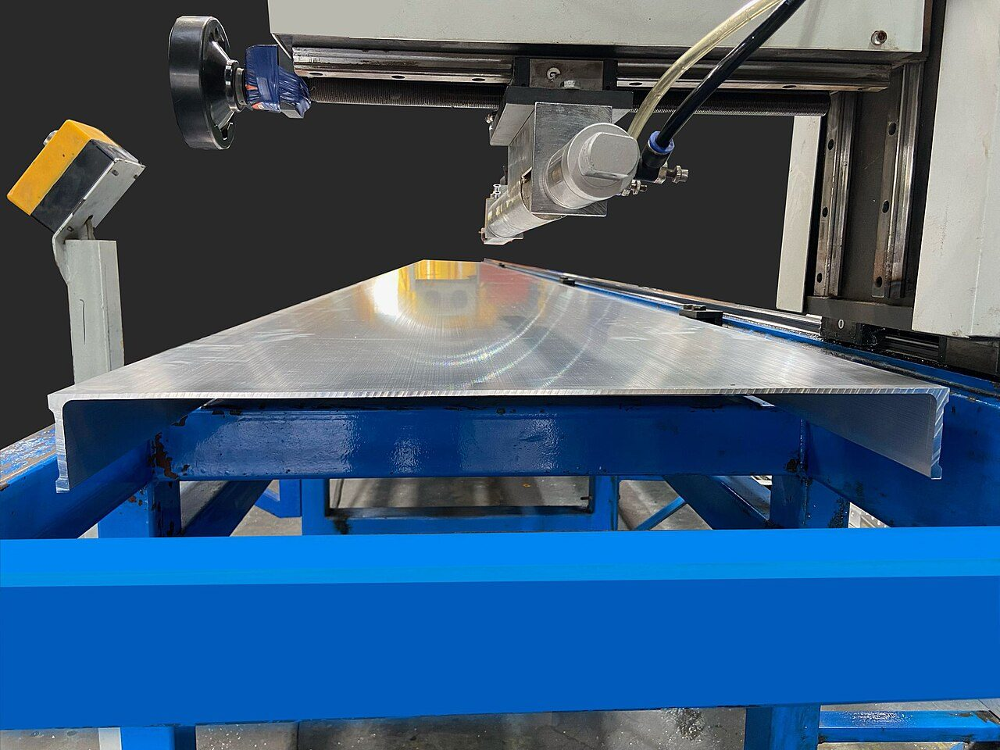

اکسترود پروفیل آلومینیوم
مقطع دلخواه شما، با قالب اختصاصی
تولید انواع پروفیل آلومینیومی با مقطع دلخواه شما. گروه مهندسی هایپرفب دربارهی هندسهی مقطع مشاوره میدهد، بعد قالب اکستروژن اختصاصی ساخته و پروفیل تولید میشود. کافی است تناژ لازم را داشته باشید و هزینهی قالب را بپردازید؛ بقیهی کار با گروه مهندسی هایپرفب است.
- تخصص: فقط اکسترود آلومینیوم
- سهم شما: تناژ لازم + هزینهی قالب
- سهم ما: مشاورهی مقطع، قالب، تولید، کنترل کیفیت و تحویل


اکسترود (اکستروژن) آلومینیوم یعنی عبور دادن شمش داغ آلومینیوم با فشار از قالب فولادی، تا پروفیلی با مقطع ثابت و طول بلند ساخته شود. هایپرفب در تهران بهطور تخصصی پروفیل آلومینیوم با مقطع دلخواه شما را با قالب اختصاصی تولید میکند: سهم شما تناژ لازم و هزینهی قالب است و مشاورهی مقطع، ساخت قالب، تولید، کنترل کیفیت و تحویل با گروه مهندسی هایپرفب. هزینهی قالب و قیمت پروفیل بر اساس آلیاژ، وزن و تناژ جدا اعلام میشود؛ مشاوره: ۰۹۹۶۲۲۳۳۸۹۸.
- خدمت
- اکسترود پروفیل آلومینیوم (فقط آلومینیوم) با مقطع سفارشی و قالب اختصاصی
- سهم شما
- تناژ لازم + هزینهی ساخت قالب
- سهم هایپرفب
- مشاورهی مقطع، ساخت قالب، تولید، کنترل کیفیت، تحویل
- حداقل سفارش
- بر اساس تناژ؛ پس از مشاوره اعلام میشود
- سفارش
- تلفنی: ۰۹۹۶۲۲۳۳۸۹۸ · بله: @hyperfab_pro
- محل
- تهران
اکسترود آلومینیوم چیست و هایپرفب چه کاری انجام میدهد؟
اکستروژن آلومینیوم (Aluminium Extrusion) یعنی عبور دادن شمش داغ آلومینیوم با فشار از یک قالب فولادی، تا پروفیلی با مقطع ثابت و طول بلند ساخته شود. تقریباً هر مقطعی که بتوان روی کاغذ کشید با یک قالب اختصاصی ساختنی است: توپر، توخالی، شیاردار، پرهدار یا با جای پیچ. همین است که اکستروژن را اقتصادیترین راه ساخت قطعات آلومینیومی بلند و یکنواخت میکند.
هایپرفب بهطور تخصصی روی اکسترود آلومینیوم کار میکند. مدل همکاری ساده است: شما تناژ لازم را دارید و هزینهی ساخت قالب را میپردازید. مشاورهی طراحی مقطع، ساخت قالب، تولید پروفیل، کنترل کیفیت و تحویل با گروه مهندسی هایپرفب است. نتیجه پروفیلی است که مقطعش دقیقاً مطابق نیاز شماست، نه نزدیکترین پروفیل موجود در بازار.
مشاوره پیش از ساخت قالب اهمیت زیادی دارد. قالب اکستروژن گران است و مقطعی که بد طراحی شده باشد ممکن است به تاببرداشتن پروفیل، سطح ناهموار یا شکستن قالب ختم شود. گروه مهندسی هایپرفب پیش از ساخت قالب، مقطع شما را از نظر ضخامت دیواره، تقارن، شعاع گوشهها و نسبت زبانهها بررسی میکند و اصلاحات لازم را پیشنهاد میدهد، تا قالب یک بار و درست ساخته شود.
در سفارش پروفیل آلومینیوم، هر مرحله با کیست؟
شما کاربرد و مقطع اولیه را مشخص و هزینهی قالب را پرداخت میکنید؛ مقطع با مشاورهی هایپرفب و تأیید شما نهایی میشود و ساخت قالب، تولید، کنترل کیفیت و تحویل با هایپرفب است.
| مرحله | با چه کسی |
|---|---|
| مشخصکردن کاربرد و مقطع اولیه | شما |
| مشاوره و نهاییکردن هندسهی مقطع | گروه مهندسی هایپرفب، با تأیید شما |
| پرداخت هزینهی ساخت قالب | شما |
| طراحی و ساخت قالب اکستروژن | هایپرفب |
| تولید پروفیل در تناژ سفارش | هایپرفب |
| کنترل کیفیت و تحویل | هایپرفب |
هایپرفب چه پروفیلهایی اکسترود میکند؟
پروفیل صنعتی و شیاردار، هیتسینک و پروفیل پرهدار، بدنه و قاب محصول، پروفیل معماری، مقاطع توخالی و چندحفره، و ریل و راهنما؛ همه با مقطع اختصاصی شما.
پروفیل صنعتی و شیاردار
پروفیلهای سازهای و شیاردار برای شاسی دستگاه، فریم، میز کار و خط تولید.
هیتسینک و پروفیل پرهدار
پروفیلهای پرهدار برای دفع حرارت در الکترونیک قدرت، درایو و LED.
بدنه و قاب محصول
بدنهی دستگاه و محفظهی الکترونیکی با مقطع اختصاصی محصول شما.
پروفیل معماری و دکوراتیو
قاب، لبه، دستگیره و پروفیلهای تزئینی.
پروفیل توخالی و چندحفره
مقاطع توخالی و چندحفرهای که هم سبکاند و هم مستحکم.
ریل و راهنما
ریل، راهنمای خطی و قطعات سبک برای تجهیزات و حملونقل.
مقطع پروفیل اکستروژن را چطور طراحی کنیم؟
با ضخامت دیوارهی یکنواخت، گوشههای گرد، مقطع متعادل و زبانههای کنترلشده؛ این نکات عمر قالب را بالا و هزینهی هر کیلو پروفیل را پایین میآورند و همه در مشاورهی هایپرفب بررسی میشوند.
ضخامت دیوارهی یکنواخت: اختلاف زیاد ضخامت، جریان فلز را نامتوازن میکند و پروفیل تاب برمیدارد.
گوشههای گرد: گوشهی تیز را با شعاع کوچک گرد کنید؛ هم عمر قالب بیشتر میشود و هم سطح بهتر.
مقطع متعادل: مقطع متقارن و متعادل، اکستروژن پایدارتر و دقیقتری دارد.
زبانههای قالب: شیار عمیق و باریک، زبانهی قالب را ضعیف میکند؛ نسبت عمق به عرض باید کنترل شود.
اندازهی مقطع: مقطع باید در محدودهی تولید قرار بگیرد؛ اندازهی مناسب در مشاوره مشخص میشود.
تلرانسها: تلرانس سخت را فقط روی ابعاد عملکردی بگذارید.
آندایز و رنگ پروفیل آلومینیوم هم انجام میشود؟
بله. پروفیل اکسترودشده معمولاً هنوز به محصول نهایی نرسیده است و در هایپرفب میتوانید آندایز پروفیل آلومینیوم، رنگ کورهای، ماشینکاری، پانچ و جوشکاری آلومینیوم پروفیل را هم بسپارید، تا قطعهی آمادهی مونتاژ تحویل بگیرید.


سفارش اکسترود آلومینیوم چه مراحلی دارد؟
پنج مرحله: ارسال مقطع یا ایده، مشاورهی مقطع، پیشنهاد قیمت، ساخت قالب و نمونه، و تولید و تحویل.
ارسال مقطع یا ایده
نقشهی مقطع، فایل DXF یا حتی طرح دستی و کاربرد پروفیل را بفرستید یا تلفنی شرح دهید.
مشاورهی مقطع
گروه مهندسی هندسهی مقطع را بررسی و برای اکستروژن بهینه میکند و تناژ مناسب را اعلام میکند.
پیشنهاد قیمت
هزینهی قالب و قیمت پروفیل بر اساس آلیاژ، وزن و تناژ جدا اعلام میشود.
ساخت قالب و نمونه
قالب ساخته و نمونهی پروفیل برای تأیید شما تولید میشود.
تولید و تحویل
پروفیل در تناژ سفارش تولید، کنترل و تحویل میشود.
سؤالات متداول
هایپرفب اکسترود پروفیل آلومینیوم انجام میدهد؟
برای سفارش پروفیل آلومینیوم اختصاصی چه لازم است؟
قیمت اکسترود پروفیل آلومینیوم چطور محاسبه میشود؟
حداقل سفارش اکسترود آلومینیوم چقدر است؟
برای مشاورهی اکسترود چه چیزی بفرستم؟
طراحی مقطع پروفیل را هم انجام میدهید؟
غیر از آلومینیوم هم اکسترود میکنید؟
پروفیل را آندایز یا رنگ هم میکنید؟
مقطع پروفیل خود را با ما در میان بگذارید
نقشه یا طرح مقطع را بفرستید یا تماس بگیرید. گروه مهندسی هایپرفب دربارهی مقطع، تناژ و قالب مشاوره میدهد.